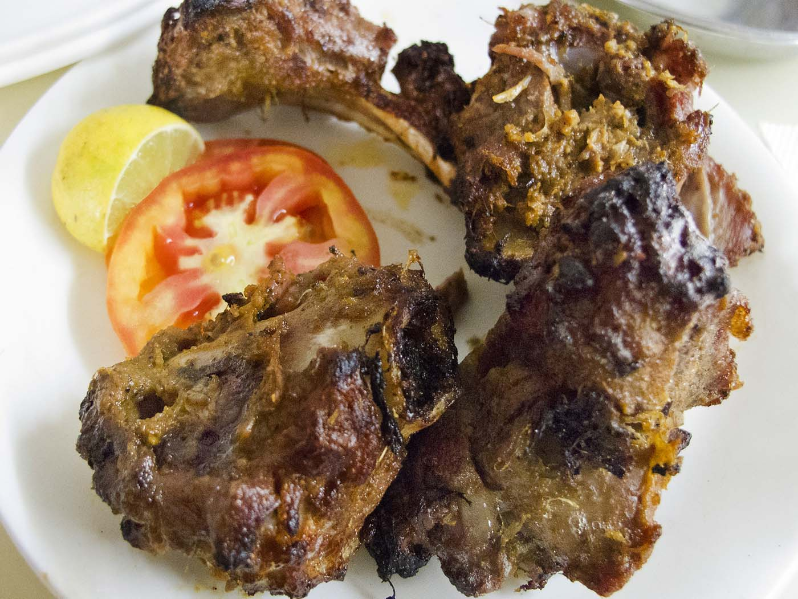

Home
Gosht Barra

Description
Double chops of mutton, marinated with spices and creamy yoghurt and roasted until juicy and smoky.
Ingredients
- 8 pcs (120g each) mutton chops
- 25 g onions
- 8 g ginger
- 6 g garlic
- 30 g papaya
- 15 g lime juice
- 10 g salt
- 3 g black salt
- 3 g red chilli powder
- 3 g kashmiri red chilli powder
- 3 g shahi garam masala
- 0.5 tsp kasuri methi
- 1 tsp pepper
- 15 g malt vinegar
- 20 g mustard oil
- 70 g hung yoghurt
For the Dhungar
- 1 small pc charcoal
- 1 tsp ghee
Steps
- Grind all ingredients for the marinade except the hung yoghurt—onions, ginger, garlic, papaya, lime juice, salt, black salt, red chilli powder, kashmiri red chilli powder, shahi garam masala, kasuri methi, pepper, malt vinegar, mustard oil—together in a blender until completely smooth.
- Trim the mutton chops to remove any hanging flaps of fat or meat. Pat them dry using a kitchen towel or paper napkins. The meat should be as dry as possible.
- Using a sharp paring knife carefully poke on the meat all around to allow the marinade to penetrate deep into the large chops.
- In a mixing bowl pour the marinade as well as the hung yoghurt over the mutton chops and mix well. Massage each piece individually, using your fingers to cover all the crevices of the meat with the marinade.
- Dhungar: Set a small piece of charcoal on the gas flame. Turn it around from time to time for about 10 minutes until a layer of white ash covers the surface of the charcoal.
- Keep a foil or tight fitting lid handy to cover the mixing bowl.
- Place a small bowl in the center of the marinade-covered mutton. Using a pair of tongs place the glowing hot charcoal in the bowl. Pour hot ghee on top of the charcoal. Smoke will start rising from the charcoal. Immediately cover the bowl tightly.
- After 10–15 minutes remove the lid, give the mutton a stir and cover again. Put this in the refrigerator (not freezer) for 24 hours.
- Next day, take out the mixture and skewer the chops by piercing the skewer in between the two rib bones as shown in the video.
- Set the oven to preheat to 200ºC for at least 15 minutes.
- Bake the chops in the oven over a baking grill with a baking tray set underneath to catch the drippings. If using an oven don't try to baste the meat frequently because it will only cool down the oven and turn your burra kababs soggy.
- When the kababs are halfway done and brown on one side turn them over to let the other side brown.
- Take out the burra kababs after about 30-40 minutes or until done and beautifully brown.
- Char the kababs over an open flame to create burnt buts like it would be if they were cooked in a tandoor at higher temperatures. Not necessary if cooking in a tandoor.
- Let the meat rest for 15 minutes before serving it with sliced onions, lime and a coriander-mint-yoghurt chutney.